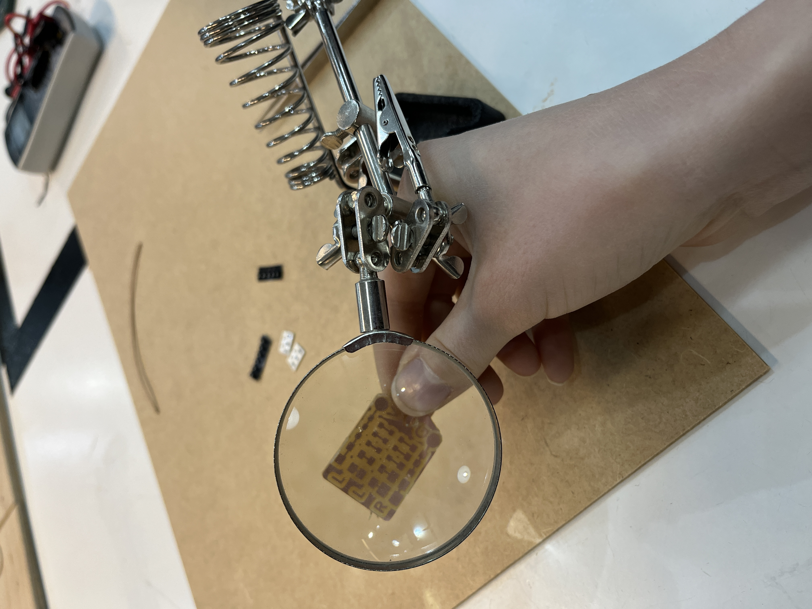
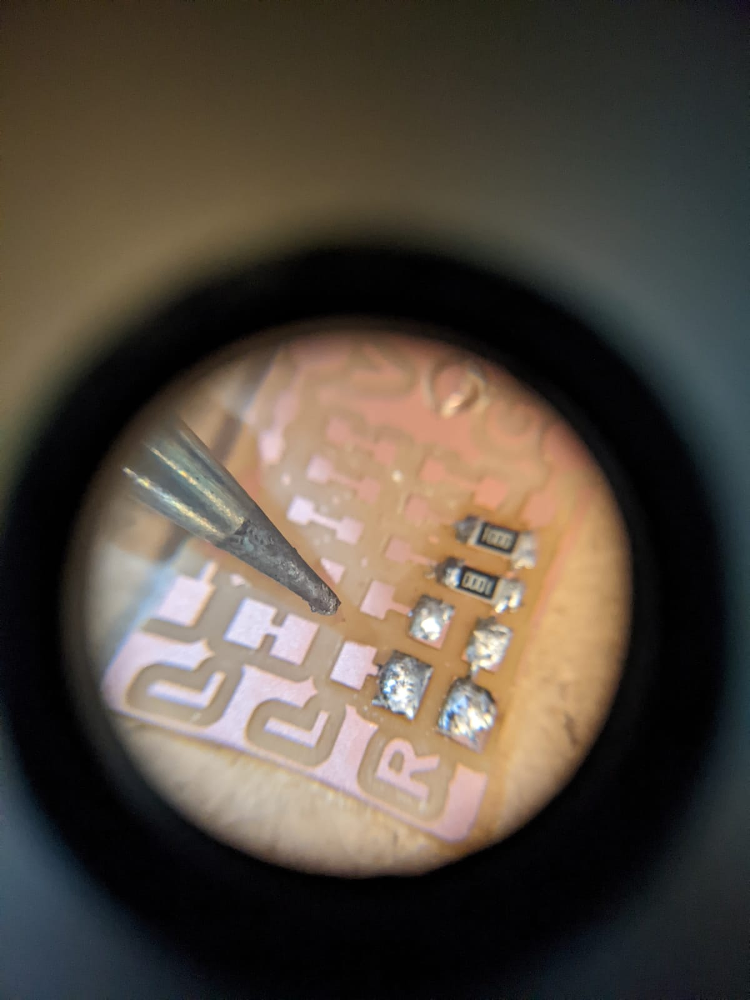
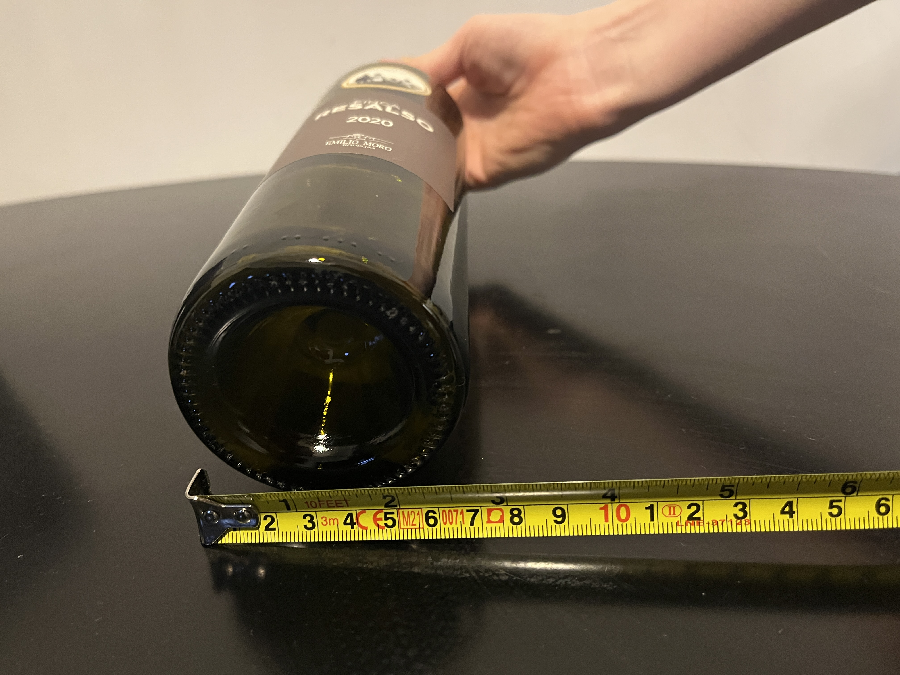
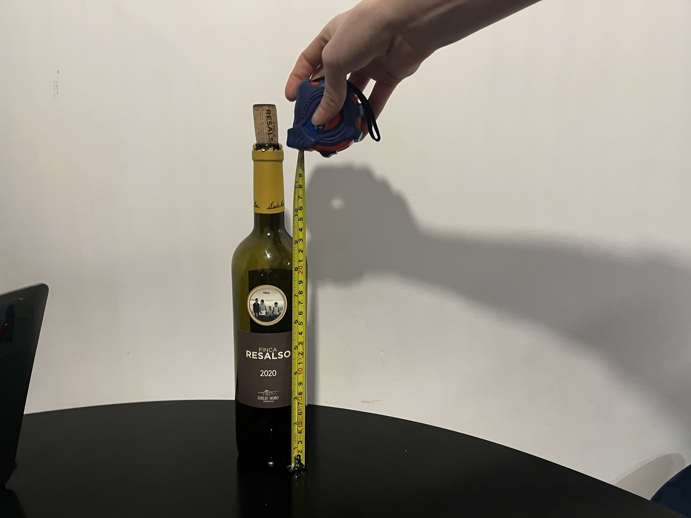
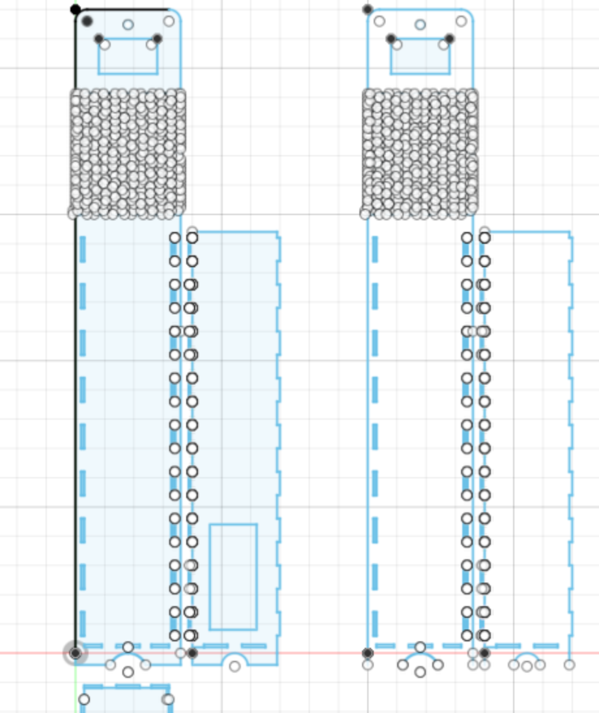
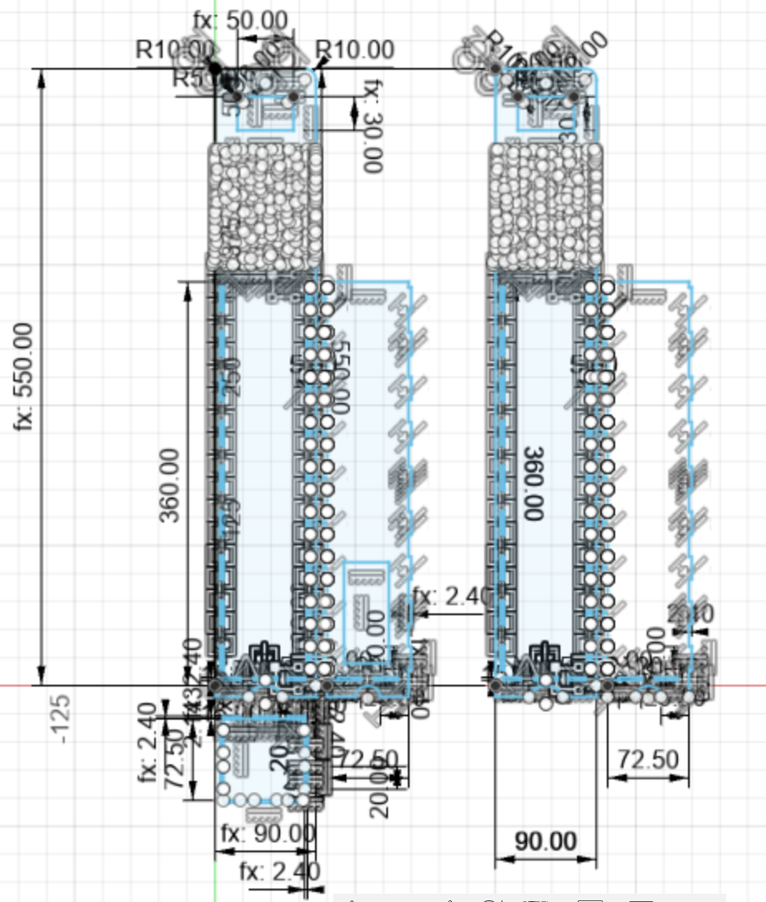
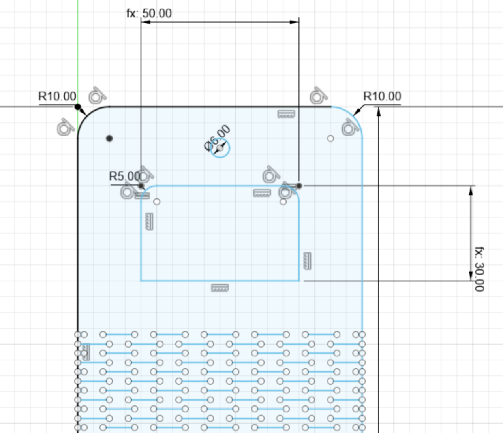
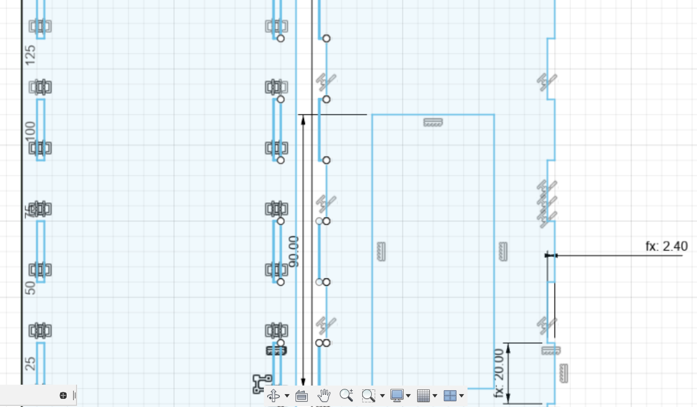
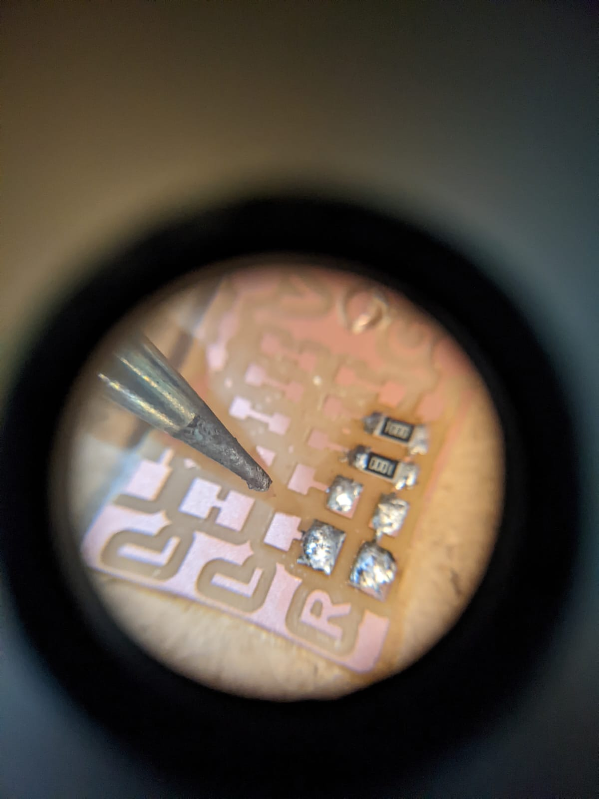
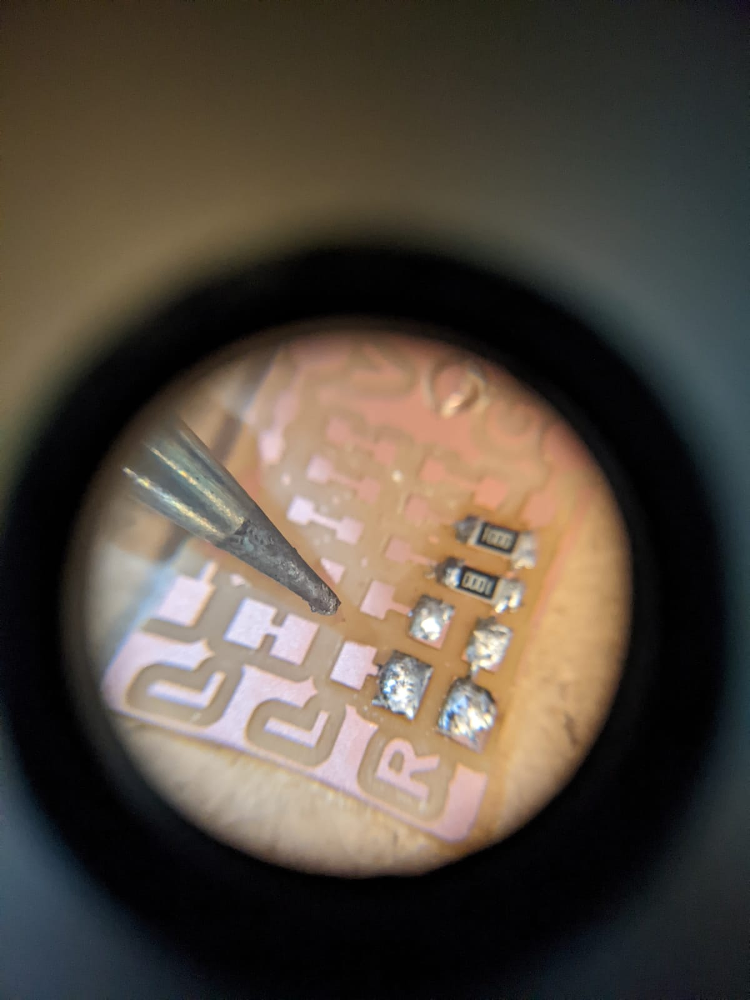

This week, we learned about Printed Circuit Boards (PCBs). It was also the same week our first monthly Micro Challenge started. You can find the documentation for the Micro Challenge here.
Our task this week was a bit smaller than usual, because of the monthly challnge (and rightfully so!). We had to finish our LED BADGE by soldering the smd components and test it, making the led light up with the power supply.
I was with Roberto when doing the soldering portion of the class, and this was the piece we made.


I didn't take a photo of the final result, because I didn't realise it was part of our assignment, so I redid it on a new piece:
I also decided to remake last week's project, given the difficulties I had while laser cutting earlier.


Measured the wine bottle again, confirming that the circumference was 7cm and height was 31cm. I made the box 7.5x36cm, and changed the joints to press-fit holes rather than finger joints.




I will laser cut the piece this Friday once we have the free lab time and post the results here.

 
